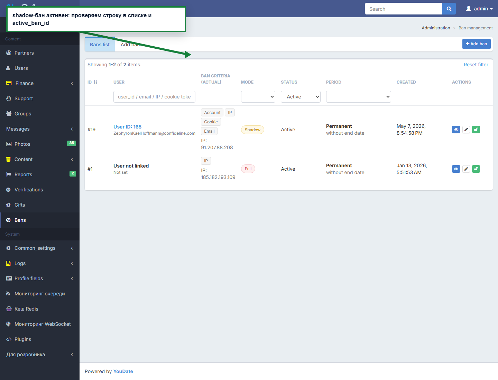
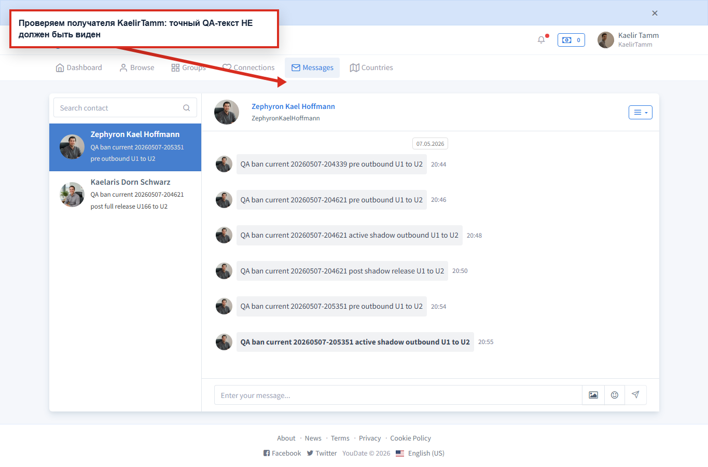
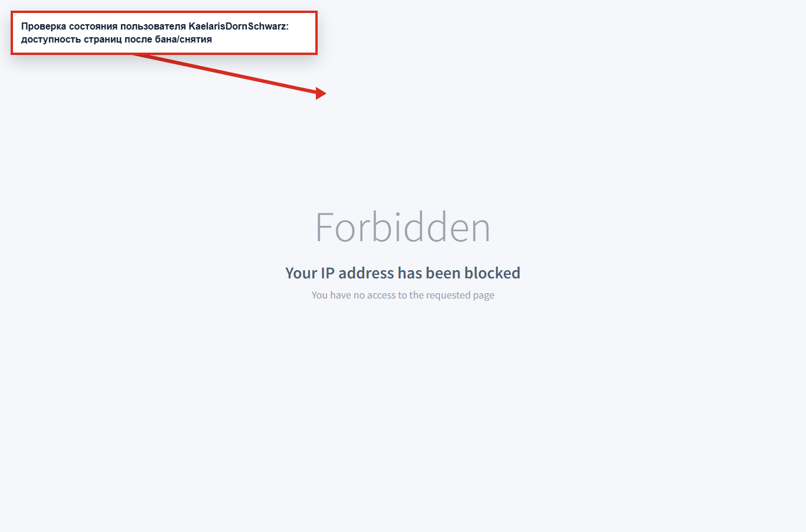
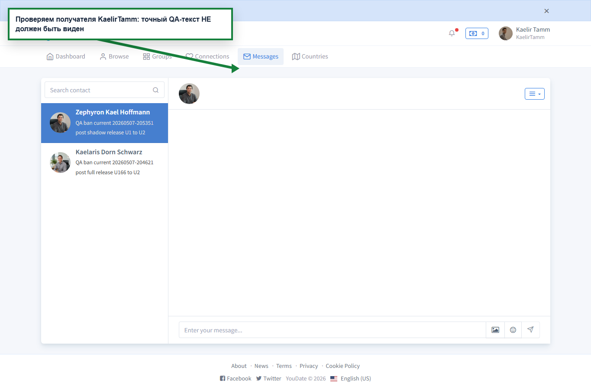
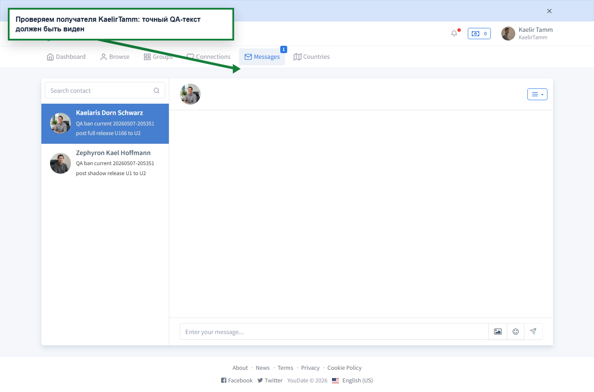

QA report · live Confideline · 2026-05-07 23:53 Minsk
Проверка банов и теневого бана
Выполнен новый честный current-pass: сначала доказан реальный active_ban_id, затем проверены действия U1/U2/U3, затем бан снят и cleanup подтвержден. Итог: admin UI и основная full/shadow логика работают, но найден воспроизводимый баг после снятия shadow-ban.
Факт: новый прогон ban-behavior-current-20260507-205351 создал shadow-ban #19 для U1 165 и full-ban #20 для U166, проверил пользовательские действия, затем снял оба бана. После cleanup у users 165, 166, 167, 168 снова active_ban_id=false.
Главный вывод: shadow-ban корректно скрывает новое исходящее сообщение во время активного бана, но после снятия бана это же during-ban сообщение становится видимым получателю. Это нарушает смысл теневого бана: действия, сделанные во время shadow-ban, не должны “догонять” других пользователей после release.
Блок для Игоря
| Статус | Зона | Что доказано | Как найти / воспроизвести | Что делать |
|---|---|---|---|---|
| FAIL | Shadow-ban release | U1 отправляет сообщение U2 во время активного shadow-ban. Во время бана U2 не видит точный QA-текст. После снятия shadow-ban U2 видит этот during-ban текст. | Создать shadow-ban U1 165 -> проверить active_ban_id -> U1 отправляет QA ban current 20260507-205351 active shadow outbound U1 to U2 пользователю U2 167 -> U2 не видит текст -> снять ban -> U2 открывает /en/messages и текст появляется. |
Искать в логике доставки/видимости сообщений после release: during-shadow записи должны оставаться недоставленными/невидимыми для других пользователей и после снятия бана. |
| PASS | Shadow-ban active state | Shadow-ban реально создается через админку: user-data после создания возвращает active_ban_id=19; в списке активных банов появляется запись пользователя. |
Открыть /en/admin/ban/create, выбрать U1 165, mode Shadow, period Permanent, сохранить; проверить /en/admin/ban/user-data?id=165. |
Admin-create flow рабочий; не чинить без причины. |
| PASS | Shadow user experience | U1 под shadow-ban открывает главную, сообщения и профиль без явного бан-экрана. Это соответствует ТЗ: пользователь не должен понимать, что забанен. | После создания shadow-ban зайти login-as U1 и открыть /en, /en/messages, /en/settings/profile. |
Поведение соответствует логике теневого бана. |
| PASS | Shadow outbound during ban | Во время активного shadow-ban U1 может отправить сообщение, действие выглядит успешным, но U2 не видит точный текст в /en/messages. |
Использовать точный QA-текст из JSON evidence и проверять именно страницу получателя, не только ответ отправителя. | Активная фаза shadow-ban по сообщениям работает. |
| PASS | Shadow inbound during ban | U3 отправляет новое сообщение U1 во время shadow-ban, U1 его не видит. Это соответствует ТЗ: новые входящие сигналы к shadow-banned пользователю скрываются. | U3 168 -> U1 165, затем login-as U1 и поиск точного текста в /en/messages. |
Активная фаза inbound скрытия работает. |
| PASS | Shadow like | Лайк U1 -> U2 во время shadow-ban внешне отправляется, но U2 не видит U1 во входящих лайках. | После shadow-ban вызвать U1 -> U2 like, затем login-as U2 и открыть /en/connections/likes?type=to. |
Проверенный представительский action работает правильно. |
| PASS | Full ban | Full-ban реально создается, основные страницы пользователя показывают Forbidden / Your IP address has been blocked, сообщение full-banned пользователя не доставляется U2, после снятия новые сообщения снова доставляются. |
Создать full-ban U166 -> открыть /en, /en/messages, /en/settings/profile под U166 -> отправить U166->U2 -> снять ban -> повторить отправку. |
Основная full-ban логика прошла. |
| PASS | Cleanup | После прогона оба созданных бана сняты: #19 shadow и #20 full. Финальная проверка user-data: active_ban_id=false у 165/166/167/168. |
Открыть /en/admin/ban/user-data?id=165, 166, 167, 168 из admin context. |
Тестовые пользователи возвращены в рабочее состояние. |
Матрица свежего прогона
| Проверка | Статус | Комментарий |
|---|---|---|
| Перед тестом у QA-пользователей нет активного бана | PASS | Проверено через user-data endpoint. |
| До shadow-ban U2 получает сообщение от U1 | PASS | Базовая доставка до бана доказана. |
Shadow-ban создан и подтвержден active_ban_id | PASS | Создан ban #19. |
| U1 под shadow-ban может пользоваться сайтом без явного бан-экрана | PASS | Главная, сообщения, настройки открываются. |
| U2 не видит новое сообщение U1 во время shadow-ban | PASS | Во время активного бана точный текст скрыт. |
| U1 не видит новое входящее U3 во время shadow-ban | PASS | Inbound скрытие работает. |
| U2 не видит лайк U1 во время shadow-ban | PASS | Incoming likes не показывает U1. |
Shadow-ban снят, active_ban_id=false | PASS | Release сработал. |
| During-ban сообщение остается скрытым после снятия shadow-ban | FAIL | Баг: после release U2 видит сообщение, созданное во время shadow-ban. |
| После снятия shadow-ban новые U1->U2 сообщения доставляются | PASS | Нормальная доставка восстановлена. |
Full-ban создан и подтвержден active_ban_id | PASS | Создан ban #20. |
| Full-ban блокирует пользовательские страницы | PASS | Показывается Forbidden / IP blocked. |
| Сообщение full-banned пользователя не доставляется | PASS | U2 не видит точный текст. |
Full-ban снят, active_ban_id=false | PASS | Release сработал. |
| После снятия full-ban новые сообщения доставляются | PASS | Нормальная доставка восстановлена. |
Evidence screenshots
active_ban_id.
active shadow outbound U1 to U2. Это подтвержденный баг.
Forbidden / Your IP address has been blocked на основных страницах.


Честная граница
Этот свежий проход закрывает core-поведение банов: создание, активное состояние, сообщения в обе стороны, лайк как представительский action, снятие, post-release delivery и cleanup. Он не притворяется полным покрытием всех платных/fixture-heavy действий из расширенного списка Игоря: gifts, photo access, visits, stories/spotlight и группы требуют отдельные подготовленные fixtures, чтобы не смешивать баланс, media state и group ownership с ядром ban delivery.
Для разработки сейчас достаточно главного воспроизводимого бага: SHADOW-RELEASE-001. После фикса нужен ретест именно этой цепочки плюс расширение на gifts/photo access/groups, чтобы убедиться, что та же delayed-visibility ошибка не повторяется в других действиях.